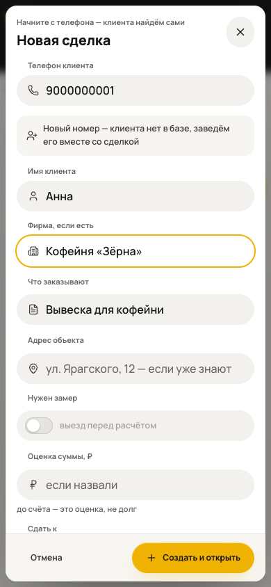
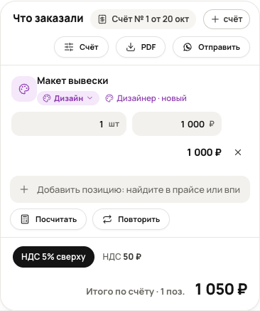
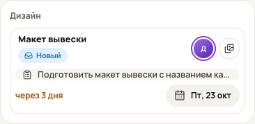
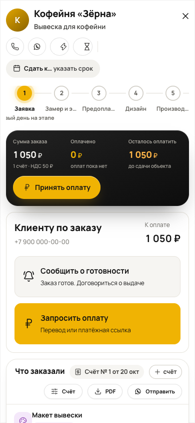

Ваш первый заказ
Памятка владельцу. Показываем на примере кофейни «Зёрна».
Тестовый вход. Открыть CRM
Кто обращается
Введите телефон, имя и компанию. Постоянного клиента CRM найдёт по номеру.
Что нужно сделать
Например: «Вывеска для кофейни». Укажите срок, если уже договорились.
Создать и открыть
Нажмите жёлтую кнопку внизу.
Заказ появился в «Сделках». Вся дальнейшая работа - в его карточке.
На телефоне листайте колонки вбок. Остальные разделы находятся в меню «Ещё».

123Передайте задачу дизайнеру
В карточке заказа откройте блок «Что заказали».
Добавьте счёт и позицию
Нажмите «+ счёт», затем добавьте «Макет вывески», количество и цену.
Выберите вид «Дизайн»
Нажмите подпись под названием позиции. Назначьте сотрудника «Дизайнер».
Опишите результат
В блоке «Дизайн» откройте макет и заполните техническое задание.
Пример задания
Вывеска «Зёрна», 2 × 0,5 м. Светлый фон, тёмные буквы. Нужны превью для согласования и исходник для печати.
У дизайнера появится карточка с заданием и сроком.
Макет уже пришёл?
Проверьте его, отправьте клиенту и нажмите «Отметить отправку клиенту». Затем запишите решение клиента.

12Ниже в этой же карточке

3Готовность и деньги
Два сообщения клиенту - прямо из карточки заказа.
Заказ готов
Нажмите «Сообщить о готовности». Проверьте текст, добавьте место и время выдачи. Отправьте клиенту.
Осталось оплатить
Нажмите «Запросить оплату». Выберите перевод по реквизитам или вставьте платёжную ссылку из банка.
Деньги поступили
Только после получения денег нажмите «Принять оплату». Укажите сумму и счёт.
Что увидит клиент
«Ваш заказ готов! Можно забрать сегодня с 10:00 до 18:00. Остаток к оплате - 1 050 ₽».
Пример сообщения, текст можно изменить.Вы видите, сколько получено и сколько ещё должен клиент.
CRM готовит сообщение. Отправку выполняете вы. Платёжная ссылка берётся в банке; автоматическая проверка платежей пока не подключена.

123CRM всегда под рукой
Добавьте значок на телефон. Открывать CRM станет проще.
iPhone
Откройте ссылку CRM в Safari.
«Поделиться» иногда находится внутри меню Safari. Если есть «Открывать как веб-приложение», включите.
Android
Откройте ссылку CRM в Chrome.
В некоторых версиях пункт называется «Установить приложение».
Схема действий. Вид меню зависит от версии телефона. Добавляйте саму CRM, а не памятку.
Наведите камеру
или нажмите сюда
На время теста
Один браузер - одна база. Чтобы проверить обе роли, выйдите и войдите с другим логином в том же браузере.
Между устройствами данные пока не передаются. Не очищайте данные сайта и не используйте приватный режим.
Лучше добавить значок до первого заказа. Для загрузки нужен интернет. Используйте учебные данные.
Что-то не получилось?
Пришлите нам скриншот и одну фразу: «Нажала …, ожидала …, получилось …».
Если нужного пункта нет: инструкция Apple · инструкция Google